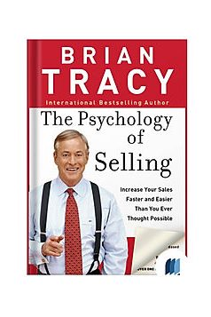

Library › Business & Startups
The Psychology of Selling — Summary & Key Lessons

Increase your sales faster than you ever thought possible — the inner game and outer mechanics of selling anything.
📖 OPEN THE FULL INTERACTIVE BREAKDOWN →🌐 Read it in Hindi, Hinglish, Gujarati, Tamil & 22 more languages — free, with audio.
💡 The Big Idea
Tracy's foundation: the 80/20 of selling is psychological. YOUR psychology first — your income tracks your SELF-CONCEPT: salespeople earn within a narrow band of what they inwardly believe they're worth, sabotaging above it and hustling below it; raise the inner thermostat (affirmation, visualization, acting as-if) and the outer numbers follow. THEIR psychology second — people buy EMOTIONALLY (desire for gain, fear of loss — fear of loss is 2.5x stronger) and justify logically; every purchase is the buyer's attempt to improve their condition, so selling is diagnosis, not persuasion: the great ones ask questions and listen 70% of the time, position the product as the bridge from the prospect's pain to their desired state, and answer the only question that matters — 'what's in it for me?' The mechanics that carry the psychology: prospect daily (the #1 reason for failure is an empty pipeline, and call reluctance is fear wearing a planning costume), handle the six objections as requests for more information, and ASK for the order — most presentations end with no ask at all. Everything improves with the golden habit: continuous learning — 'work on yourself harder than you work on your job.'
🧠 The 4 Key Lessons
Lesson 1: The Inner Game: Your Self-Concept Sets Your Income
Chapters 1-2: The Inner Game of Selling
Every salesperson has an internal 'income thermostat' — a self-concept level of what they're worth per year. Earn meaningfully above it and unconscious sabotage kicks in (slacking after a great month, fumbling big deals); fall below and urgency magically appears. The performance ceiling isn't the market, the product, or the territory — it's the setting on the thermostat. Tracy's rewiring protocol: decide your new number and write it daily; use affirmations in the present tense ('I earn ₹X') because the subconscious can't distinguish vividly imagined from real; visualize the best version of your calls BEFORE making them (top performers pre-play success; strugglers pre-play rejection, then obligingly perform it); and act AS-IF — dress, prep, and schedule like the ₹1Cr producer before the income arrives, because behavior drags identity behind it. The top 20% of salespeople earn 80% of commissions not through 4x talent but through marginally better psychology compounded over thousands of interactions — the winning edge: small differences in ability, massive differences in results.
📖 Example: Tracy's own arc, told throughout: unemployed dropout washing dishes, then straight-commission cold-call sales — failing for months, until he asked the top producer what he did differently. The answer (structured presentations, real questions) helped — but… Read the full example →
⚡ Do this: Write your target annual income at the top of a card. Below it: 'I am among the top performers in my field.' Read it aloud morning and night for 30 days, and before every important call, spend 60 seconds vividly replaying your best-ever sales interaction — then dial.
Lesson 2: Why People Really Buy: Emotion First, Logic as Alibi
Chapters 3-4: Why People Buy
Nobody buys products — they buy FEELINGS: the anticipated improvement in their condition. The two master motives: DESIRE FOR GAIN (money, time, status, health, praise, peace) and FEAR OF LOSS (2.5x more motivating — 'what this costs you by NOT acting' moves more people than any benefit list). Practical decoding: features are facts, benefits are what the fact DOES for them, and the sale lives one level deeper — the emotional payoff of the benefit ('40% faster reporting' → 'leave at 6' → 'your daughter's football games'). Tracy's diagnostic frame: every prospect has a current condition and a desired condition; the GAP is the selling opportunity, and your questions must make the gap vivid and expensive before your product bridges it (no gap, no sale — which is why 'not interested' usually means 'no gap shown,' not 'no need'). And the buyer's eternal radio station: WII-FM — What's In It For Me. Every sentence of a pitch that answers a different question is noise the prospect politely endures.
📖 Example: Tracy's classic reframe demo: the salesman selling drill bits who realizes nobody has ever wanted a drill bit — they want HOLES; and one level deeper, they want the shelf mounted, the wife pleased, the weekend task conquered. His insurance-sales version:… Read the full example →
⚡ Do this: Take your product and complete this chain for your top 3 features: FEATURE → so what? → BENEFIT → so what? → EMOTIONAL END-STATE. Rewrite your pitch to open with the end-state and the cost of NOT acting; demote features to supporting evidence.
Lesson 3: Ask and Listen: The Person Asking Questions Has Control
Chapters 5-6: Creative and Consultative Selling
Amateurs present; professionals DIAGNOSE. The consultative structure: open with questions about their situation (current condition), their frustrations (pain), their goals (desired condition), and the stakes (cost of the gap) — listening at least 70% of the time, because listening builds trust faster than any credential ('telling is not selling'). Questions run the psychology in your favor three ways: the asker controls the direction, the answerer feels valued (people believe conclusions they SAY more than conclusions they HEAR), and the answers hand you the exact emotional vocabulary to sell back ('you said month-end reporting is ‘a nightmare’ — here's how that nightmare ends'). Tracy's positioning goal: stop being a salesperson in their mind and become an ADVISOR — the shift happens the moment your questions teach them something about their own problem. Then present ONLY the two or three capabilities that bridge THEIR stated gap: the 20-feature firehose presentation is the sound of a salesperson selling to themselves.
📖 Example: Tracy's tale of two office-equipment reps: Rep A opens with the brochure and a 20-minute walkthrough of specs; the prospect nods politely, 'leaves it with the team,' and vanishes. Rep B opens with 'walk me through what happens when a document leaves your… Read the full example →
⚡ Do this: Script your next five discovery calls around four questions: 'How do you handle X today?' / 'What's the most frustrating part?' / 'What would ideal look like?' / 'What's it costing you to stay as-is?' Track your talk-time; if you spoke more than 40%, you presented — you didn't sell.
Lesson 4: Prospect Relentlessly, Handle Objections, Ask for the Order
Chapters 7-8: Getting More Appointments, Closing
The pipeline is the oxygen supply: the #1 cause of sales failure is not poor closing — it's EMPTY CALENDARS caused by call reluctance (fear of rejection dressed as 'research' and 'planning'). Tracy's antidotes: treat rejection as statistical, not personal (every 'no' has a cash value once you know your ratios — 20 calls → 5 meetings → 1 sale at ₹40k commission means each dial EARNS ₹2,000 regardless of outcome); prospect in the golden hours (9-12) and grade prospects hard (a qualified 'maybe' beats five flattering time-wasters). Objections are buying signals — the six universal families (price, quality/performance, competitor comparison, capability doubt, bad past experience, 'need to think/ask') are requests for reassurance: welcome them ('that's a great question'), isolate ('if we solved that, would you move forward?'), answer with proof (testimonials outperform claims 10:1). Then the step most presentations simply omit: ASK. The invitational close ('Why don't you give it a try?'), the directive close (assume and schedule next steps), the secondary close (decide a small thing — 'delivery Tuesday or Friday?'). Fortune, in this profession, literally favors the person who asks.
📖 Example: Tracy's ratio revelation with a failing trainee: the man's closing rate was fine — his DIAL COUNT was eleven a week, padded with beautiful research. Forced to 40 dials/day with a script and a 'no's-per-day quota (celebrate 20 nos), his income tripled in 90… Read the full example →
⚡ Do this: Compute your personal ratios this week (dials → conversations → meetings → sales → commission per dial). Set a daily DIAL quota, not a sales quota. And append to every presentation a written closing question you will say out loud — verbatim — before the meeting ends.
✅ 5-Step Action Plan
- Reset the inner thermostat: written income target + daily present-tense affirmation + pre-call visualization.
- Sell the emotional end-state and the cost of inaction; demote features to evidence.
- Diagnose before presenting: four discovery questions, 70% listening, their words in your pitch.
- Hit a daily dial quota and price every 'no' — rejection is revenue in progress.
- End every presentation with an explicit, rehearsed ask.
💬 Best Quotes from The Psychology of Selling
- “The person who asks questions has control.”
- “People buy emotionally and justify logically.”
- “Your income can grow only to the extent that you grow.”
Interactive version: mark lessons as read, listen in your language, share quote cards.